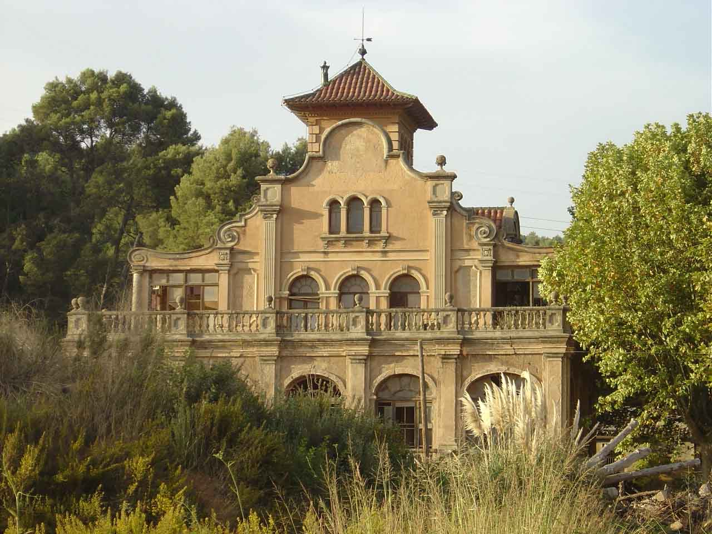
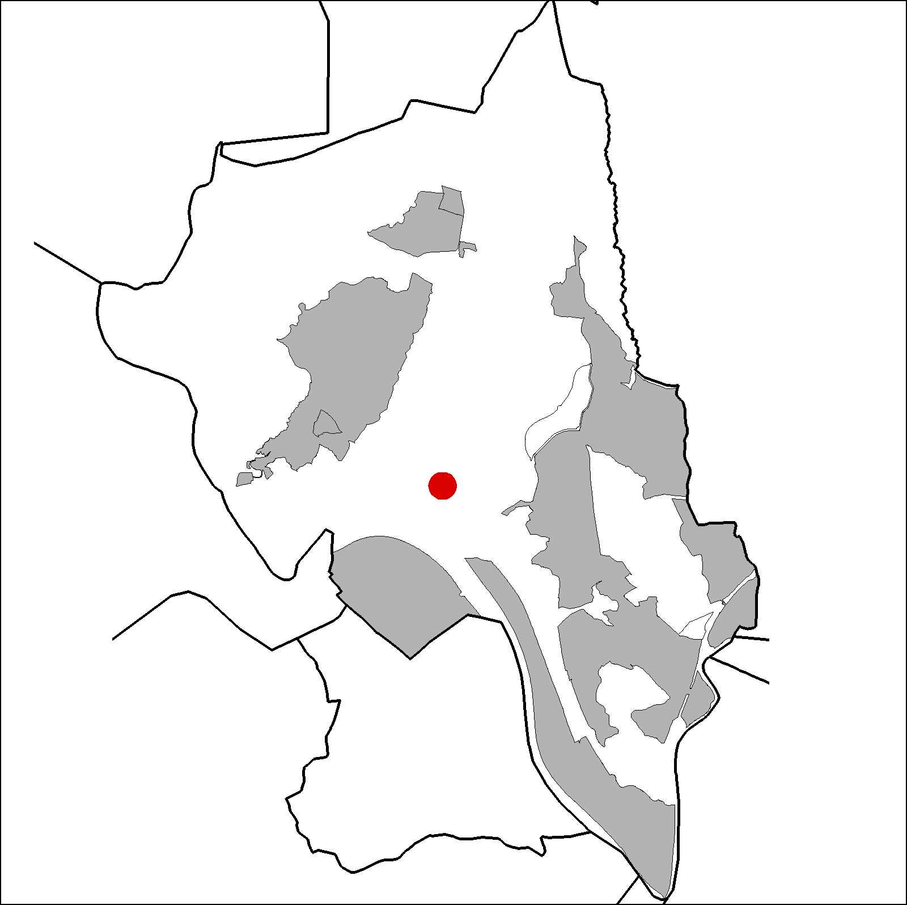

|  |  |
Nom de l’element: Casal del Benviure
Clau d’identificació: B.1.02
Nucli o indret:
UTM: X=413.719, Y=4.592.335, 45 m s.n.m.
Referència cadastral: Polígon 20, parcel·la 09504 (000400800DFHH)
Règim del sòl: Sòl no urbanitzable.
1.1. Època de construcció i tipologia:
Edifici de caràcter monumental de planta regular, de l’any 1934 – 1936. Presenta una barreja eclèctica entre ordres neoclàssics manieristes i una decoració barroca francesa. Està format per una planta baixa a on s’hi obren el porxo, el primer i segon pis i una planta semisoterrada. Al primer pis hi ha una galeria d’arcs. Per sobre de les galeries hi ha una terrassa des d’on arrenca la façana superior retranquejada. Els murs són d’obra revestida i la coberta, a dues aigües, és de teules. Està rematada per una torre de planta quadrada i de coberta a dues aigües. Com a elements a destacar trobem el remat de les façanes amb una cornisa ondulada barroca, la façana porticada amb arcs, les façanes laterals amb frontons, pilastres i balaustrades; el torreó amb ràfec i estructura de fusta; i la façana posterior amb frontó circular. Va ser utilitzat com a balneari i casal en els inicis de la seva història.
1.2. Estat de conservació:
En general, és regular. Les estructures portants, els forjats i les voltes, i les façanes presenten un estat mitjà de conservació. En canvi, el paviment, les obertures i elsacabats interiors presenten un estat dolent. S’hi detecten humitats.
1.3. Ús actual:
1.3. Ús actual:
1.4. Accés:
Accés des del camí proper a l’estació de la RENFE.
Edifici monumental de grans dimensions, d’estil neoclàssic manierista i de decoració barroca francesa.
3.1. Usos admesos:
Habitatge rural (màxim 3 habitatges); residencial; hoteler (excepte aparthotel; i amb un màxim de 30 places); oficines i serveis; industria vinculada a productes del camp (industrial, categoria 1ª); educatiu; recreatiu cultural i social; recreatiu de restauració; esportiu.
3.2. Condicions d’ordenació:
Segons Pla Especial a redactar.
3.3. Accés i serveis:
Camí proper a l’estació de la RENFE.
BCIL (Bé Cultural d’Interes Local)